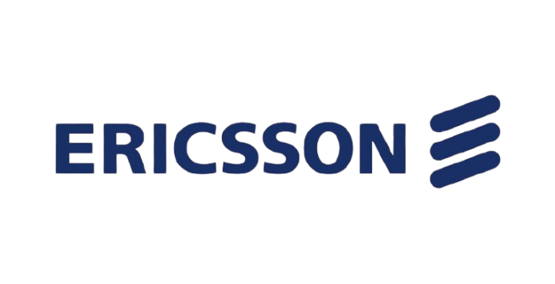

At Tele Logistics, we deliver cutting-edge telecom, electrical and infrastructure solutions that shape smarter, more connected African communities.
We are Tele Logistics, a proudly African firm with a decade of experience designing and executing telecom, energy, and civil infrastructure projects across Nigeria and West Africa.
Driven by purpose, expertise and a commitment to long-term development, we work alongside public institutions, private organizations and non-profit partners to deliver results that empower people and power progress.

Engineering Smarter Networks. Powering Reliable Futures.
We specialize in building next generation telecom infrastructure including tower builds, fiber networks, system upgrades and maintenance designed for scalability and sustainability.
Request a Project ReviewFrom renewable energy integration and rural electrification to energy audits and mini-grid deployment, we help power Africa's future, one community at a time.
Talk to Our ExpertsTele Logistics offers full-cycle project management from planning, permitting and technical oversight to post deployment evaluation and optimization.
Book a Strategy SessionWe execute foundational works such as mast foundations, site prep and facility development, ensuring each project is structurally sound and built for the long haul.
See Our WorkWe empower telecom operators to fine-tune their network performance with targeted, data-driven improvements ensuring stronger coverage and smarter resource allocation.
Learn MoreWe provide physical and cyber-secure environments through advanced monitoring and access control. Our systems are scalable and future ready.
Get ProtectedAfrica's infrastructure challenges demand more than blueprints, they require adaptive strategies, emerging technologies and people first thinking.
At Tele Logistics, our solutions go beyond materials. We leverage real time data, predictive analytics designed to solve complex problems in dynamic environments. Whether rolling out rural broadband or integrating hybrid energy systems, we align every project with the realities of terrain, users and long term goals.
Planning a site upgrade? Rolling out 5G? Greening your energy supply?
Talk to a Tele Logistics Specialist